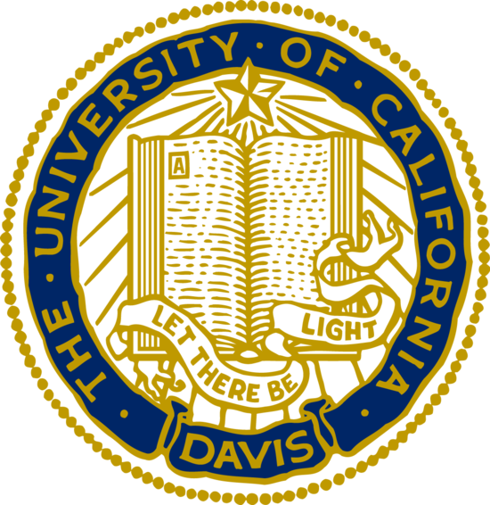

Click Here to Id You Want To Return To Homepage--> Home
History: Zhongshan, China is a city in China named after a leader of early Chinese Politicans during 1925. Having been to U.S. for almost 10 years,
I would describe Zhongshan similar to the city Oakland,CA.
Population: 3,142,300. I consider it as a huge population city. You can see taxi everywhere you go
Language: chinese. Although we mainly learn science and literature in Chinese, we still
put in a lot of time just to learn English. School would spend a lot of resource just to get foreigners
communicate with us so we can learn the language English.
Here is a picture of my boarding school
Here is a picture from my internship.
< 14: I went to a private boarding school in China. Above picture is my middle school.
We have around 20 classroom in China, and each classroom usually contains 50 stuents. We would usually have teachers in different subjects
come to teach. With the education system that United States has, we go to different classroom
for lectures.
>=14 & <= 18: Coming to U.S., I knew no one in Pleasanton and it was very scary at first. I left
"old Kevin" behind and start a "new Kevin" again. Now, I looked back, it probably the best decision that I ever made.
I was able to start a new journey in the U.S., made new group of friends and started a new life here.
During my teenagehood, I spent most of time playing basketball and play video games. Well back then, there wasn't much to do
in Pleasanton, since I didn't have a car and Pleasanton is a very quiet city. Therefore, I actually spent a lot of time in school because I didn't have anything else to do.
The class I struggled the most was actually also my favorite class, English Literature. Here are couple books that I still remembered Haper lee's To Kill a Mockingbird,and The Great Gatsby.
>=19 & <=23: Fastforward to UC Davis. I spent 4 years in UC Davis. While in college, I tried many things, just like many other college students do such as sleeping for three hours when preparing for midterm/finals,
skipped some 6am classes, falling in love,finishing an finance internship that you wanted the most, going for a road trip with your best friends and last but not least Gradutation. I felt very scary to grauate, but it is an thing that we all had to do.
I attached a picture of my internship above and the internship taught me that all the small little thing that we accomplish every day would gradually add up together to help you get to where you want to be in life.
Posted College: I took a job in a phone communication company in the finance department working as an business analyst and I have been really wanted to step into
coding for my career post college but I didn't have the financial capability and courage to make that change. Given my parents aren't in the U.S., I would
have to stop working for 6 months. After couple months working in the old company,
I realized that I need to pursue what I want to do in my life. I didn't enjoy the work I was doing. I was mostly doing Excel work for most of my time. I want a career advancement but also doing
something that I am passionate about while giving me the financial stability. Now, I am starting Galvanize SOMA in San Francisco and
I want to get to know all of you and make the best out of this 6 months immersive web development program.
-Good luck to all of you all well, let's work hard together!

Thank Again for reading this post, if you want to return to the home page, please click the link on the very top.
If you have any questions or advices for me, please shoot me an email at kvinzheng@gmail.com!